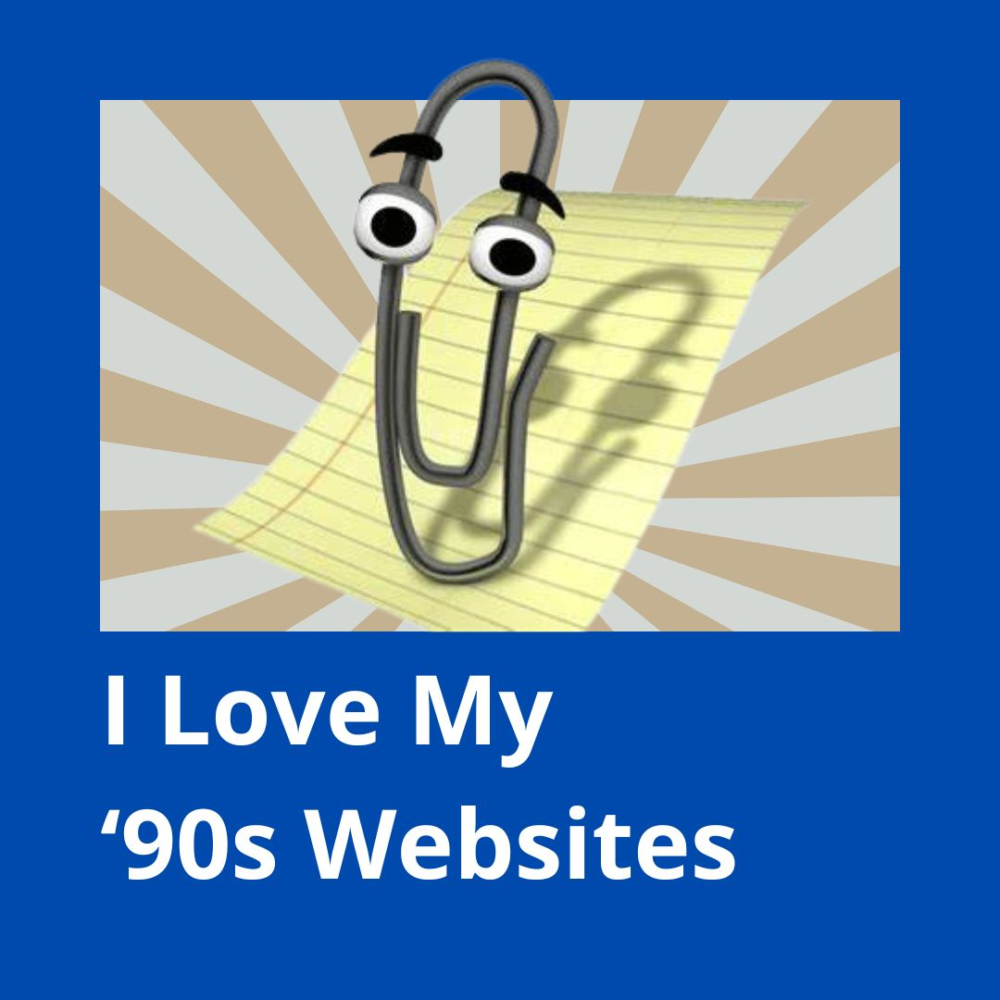

C#/.NET
EF Core
Node.js
Typescript
React
Next.js
Python
SQL
MongoDB
HTML/CSS
PHP
Software Engineer, Programmer, Web Developer and Storyteller.
Steven Koerts (1997)(Rotterdam, The Netherlands) is a software engineer, web developer and a passionate storyteller. He graduated in 2020 from a Bachelor (BSc) of Computer Science from the Rotterdam University of Applied Sciences. Steven has worked for IT Startups and Digital Agencies. His work experience varies from small business websites to large scale applications. Large scale web applications come with another level of complexity, having to build multiple 3rd party integrations and dealing with external stakeholders that are located all over the globe.
In the evening and weekends you could spot Steven performing stand-up comedy, poetry or spokenword at an open mic event.
A picture of me at my best when I hit the stage.
Ter gelegenheid van 750 jaar stadsrechten Schiedam heb ik een storytelling platform gebouwd om zoveel mogelijk verhalen uit de stad te verzamelen. Deel jouw verhaal met de stad en breng een mooie ode!
Bekijk de site op odeaanschiedam.nl
FYI: I'm born in 1997, so what do I know. ;)
The possibilities of modern web applications are becomming more and more advanced. With the rise of new technologies like React, Angular and Vue.js, the web is changing rapidly. With just HTML, Javascript and CSS you can build a full scale application.
But, what about the old days? The days of the internet of the 90s. The days of the blink tag, the marquee tag or the headbanging_banana.gif .
The internet allowed you to have a personal homepage (PHP) where you can just express yourself. A little online creative space where you show to the world who you are (or who you are not).
The 90s web is the inspiration for this website. Since I am the only maintainer of my portfolio website, why should I configure a complicated CMS, maintain a database and have a complex build process?
I can just write some HTML, CSS and Javascript and put it on the internet. The 90s seemed to have figured out simplicity perfectly. No need for a fancy build process, no need for a database, no need for a CMS. By removing unnescary complexity, I also reduce the risk of breaking things in the future. Being able to write a piece of text and put it live through a single document is a very elegant way of maintaining a website. Look at the YAGNI principle. By going back to the basics, it gives room to think about the essence why you are creating something in the first place.

Sidenote: Who remembers hyves.nl?
The idea of having a personal website is a good way to express creativity. From old style 90s websites and personalized homepages to big multinational brands. Having a place where you can try new idea's and directly share them with the wonderfull world of the wide web gives a feeling of ultimate freedom. Whether you put your idea's on some sticky notes on the wall, or in a public directory for everyone to see. Writing it down and sharing your thoughts is the first step towards realization.
Don't be affraid to share new idea's and random thoughts. Just make stuff, throw it into the world and let the people respond to it.
Functional Programming is one of those skills that not every programmer has and where the opinions among developers deviate whether they think it is usefull, or not. Where one programmer will see pure beauty within closures, lambda expressions, immutability, function compositions and curried functions. Others are completely confused by the syntax.
Functional Programming might not get you a job in the real world, but it definitely gives the engineer a higher level of understanding about the computer science world. In most cases you probably also don't need any functional programming knowledge. Nevertheless, the few programmers who know it will be able to set themselves apart from the crowd.
I am one of those programmers who sees the beauty within functional programming paradigms and once in a while it is nice to fiddle some draft functions in a blanco project.
Let's take a look at the above code snippet written in Typescript, that I picked up while following a software engineering minor and that I still use today. (Guess what, something I learned in school is still usefull.)
The snippet includes an interface Func, that simulates the structure of a lambda, simular to the
Func in C#.
Each attribute is a function.
Where:
Understanding every inch of these concepts is a long road. Eventually functional programming practices the concept of writing code that doesn't break over time. Being able to write code that does not break, that sounds like music to my ears and that is what every self respecting developer tries to strive towards.
So, are you ready to give functional programming a chance?